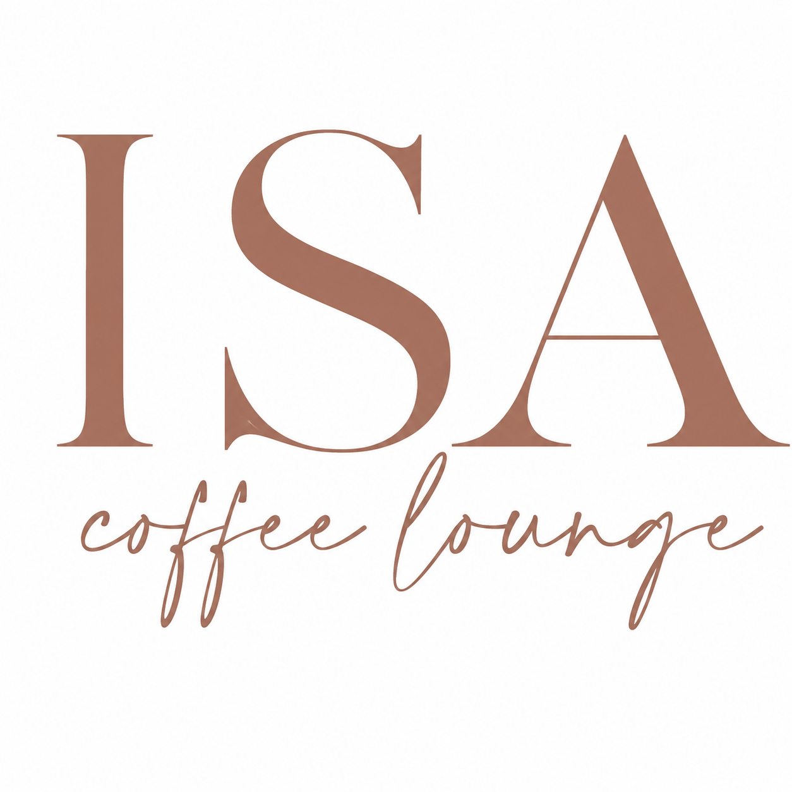
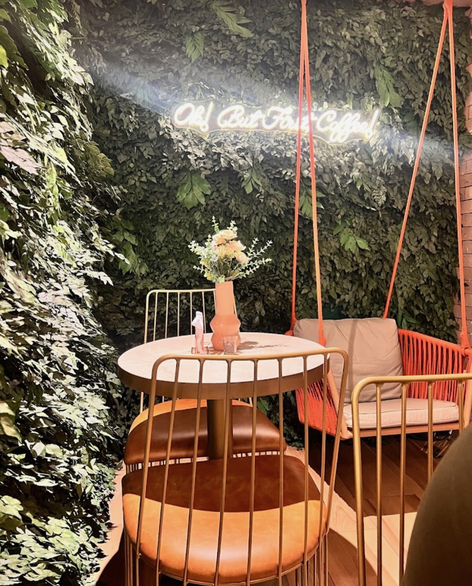
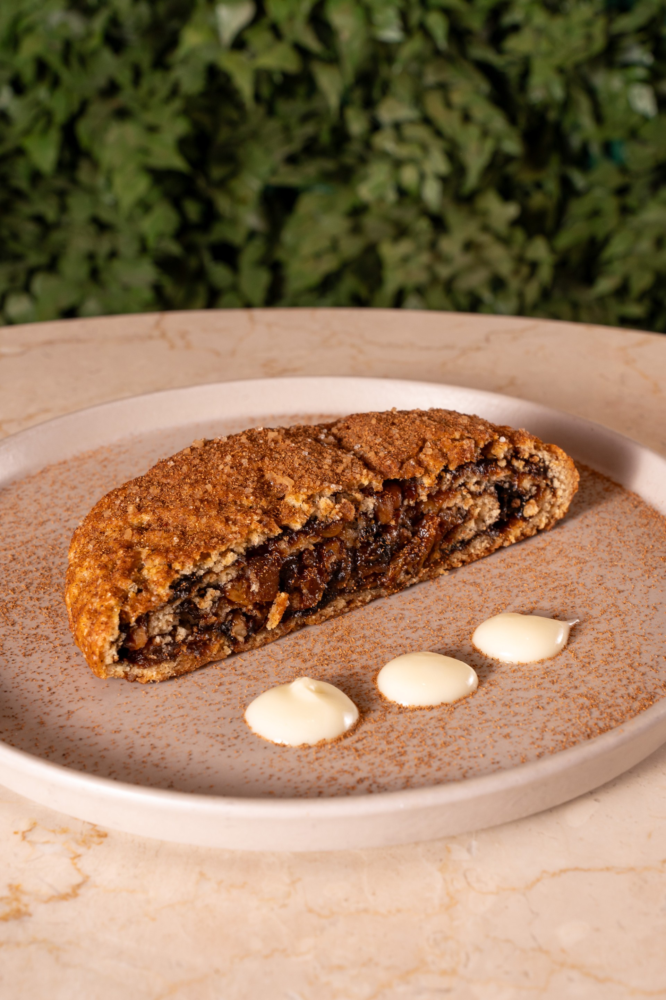
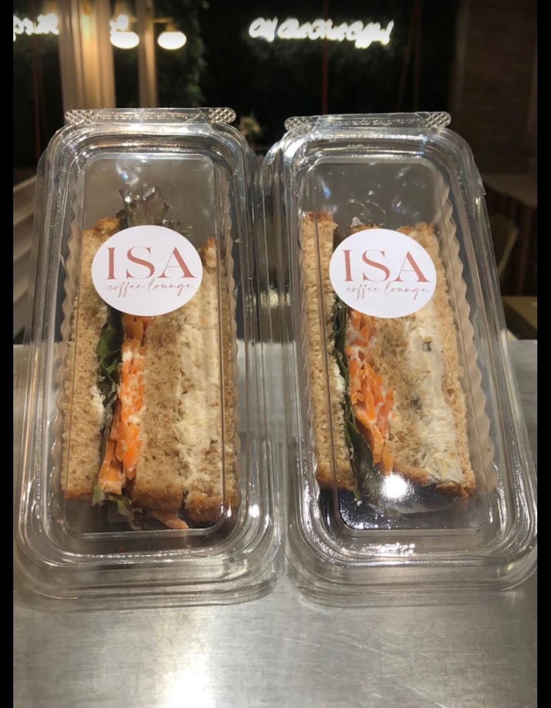
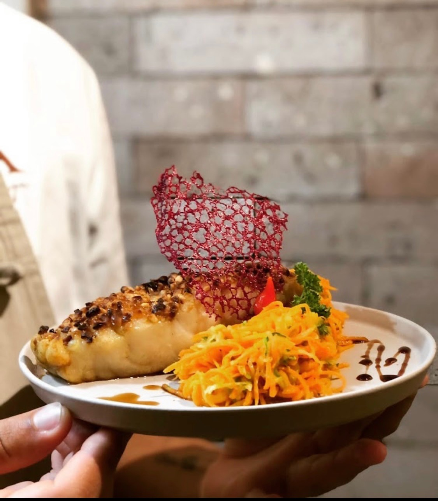
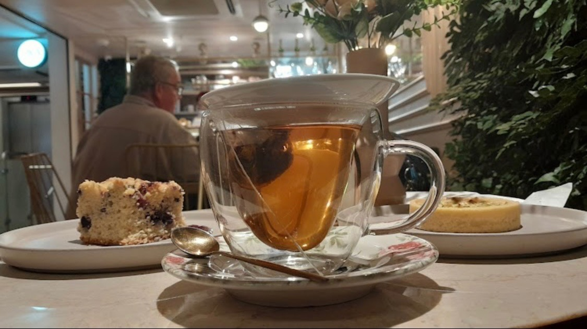
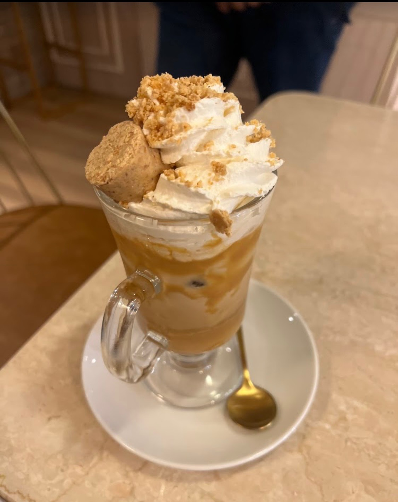
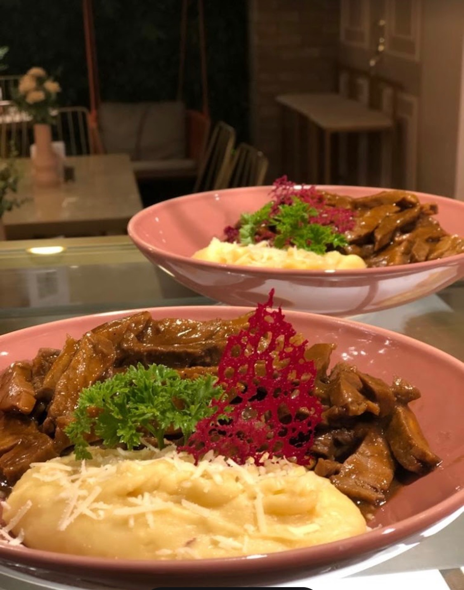
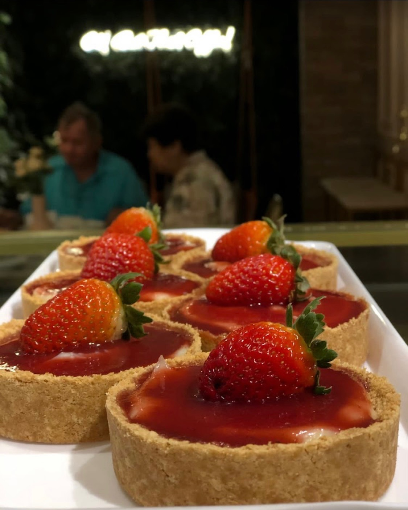

Breakfast, Lunch & Coffee
The menu includes Coffee & Beverages.

Isa Coffee Lounge
Breakfast, Lunch & Coffee
Located in Recife's thriving business district, the café welcomes professionals, entrepreneurs, travelers, and local guests into a warm, elegant setting designed for breakfast, meetings, focused work, relaxation, and social gatherings.

The menu includes Coffee & Beverages.
Reviews & Recognition "I was pleasantly surprised by this café.
Located in Recife's thriving business district, the café welcomes professionals,... — Located in Recife's thriving business district, the café welcomes professionals, entrepreneurs, travelers, and local guests into a warm, elegant setting designed for breakfast, meetings, focused work, relaxation, and social gatherings.
Coffee remains at the center of the brand, with premium beans and careful craftsmanship used across classic espresso drinks, signature cappuccinos, and seasonal specialties.
Signature Cappuccinos - Rich, carefully crafted cappuccinos that are frequently praised by guests.
Premium Espresso Beverages - Classic espresso-based drinks prepared with premium beans.
Gourmet Breakfast Selections - Refined breakfast options inspired by European café traditions.
The sweet potato coxinha was absolutely delicious." - Niedja Tenorio "Great food, excellent service, and an incredibly pleasant atmosphere.
The tone should feel elegant, warm, modern, trustworthy, and welcoming rather than formal or exclusive.







Ready to visit Isa Coffee Lounge, explore an offering, or plan a gathering? Choose the option that fits.